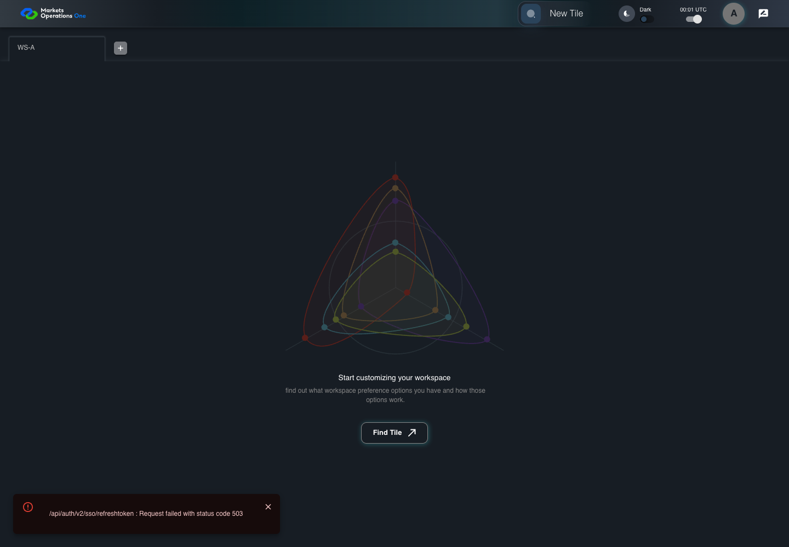
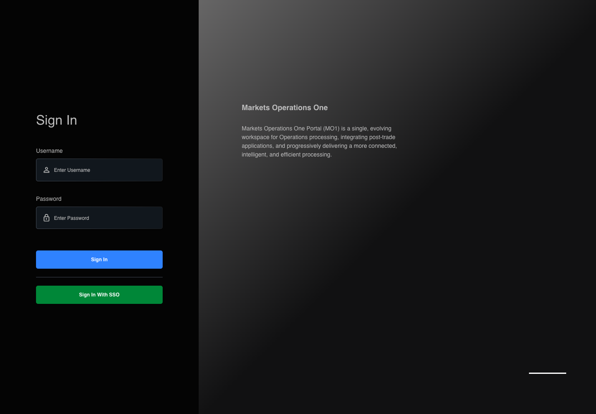

AUTH-067 missed acquisition does not replay
PASS · application/run-050/auth-067-missed-acquisition-does-not-replay-795f95ac92a9-attempt-1 · ACTUAL_APPLICATION_LOCAL_SERVICES
Actual MFE; controlled API responses, clock, visibility and suspension adapters. Unsigned browser-only credentials. No natural lifecycle, real identity or service policy acceptance.
2026-10-22T06:05:18.688Z to 2026-10-22T06:05:23.976Z
Assertions and result · Artifact manifest · Exact run inputs and source hashes
Result SHA-256:633441ce706108a96db4a9a4e63e5958d52f1f1ed2f07c2ee18d5547e84715f5Machine observations
- session-fixture.json
2ff969a1cff8272713e3a96ee56331f7679df963028bfdd4f94cc828f0552e25 - session-observations.json
6b4e65f6f6f67ad48ba7926461bf8b21f1952dbeeefe4b7afb18bcf6e9c93320
Screenshot capture: CAPTURED. Named frames: 16.
Step screenshot evidence: COMPLETE. 15/15 canonical steps have execution screenshots.
Canonical step timeline
Given User A is authenticated as user-a in an isolated browser context
Execution: PASSED.
1. step-01 Visible state after step 1: Given User A is authenticated as user-a in an isolated browser context
2026-10-22T06:05:20.214Z · 1440×1000
Step: /Users/lushevol/code/github/ratan-release-impact/workbench/tasks/ui-test-coverage-20261022/test-cases.md:2541
SHA-256:173819b107f9721ddd580be6e85c728fb50ae34f4f23504c76db9e83104ff541And the selected fixture tab is labelled "WS-A" inside the tablist named "workspaces" on the Home page
Execution: PASSED.
2. step-02 Visible state after step 2: And the selected fixture tab is labelled "WS-A" inside the tablist named "workspaces" on the Home page
2026-10-22T06:05:20.303Z · 1440×1000
Step: /Users/lushevol/code/github/ratan-release-impact/workbench/tasks/ui-test-coverage-20261022/test-cases.md:2542
SHA-256:173819b107f9721ddd580be6e85c728fb50ae34f4f23504c76db9e83104ff541And access A expires at controlled time T+900 seconds; no refresh credential exists
Execution: PASSED.
3. step-03 Visible state after step 3: And access A expires at controlled time T+900 seconds; no refresh credential exists
2026-10-22T06:05:20.391Z · 1440×1000
Step: /Users/lushevol/code/github/ratan-release-impact/workbench/tasks/ui-test-coverage-20261022/test-cases.md:2543
SHA-256:173819b107f9721ddd580be6e85c728fb50ae34f4f23504c76db9e83104ff541And the page became hidden before T+875 seconds; hide acquisition failed
Execution: PASSED.
4. step-04 Visible state after step 4: And the page became hidden before T+875 seconds; hide acquisition failed
2026-10-22T06:05:20.649Z · 1440×1000
Step: /Users/lushevol/code/github/ratan-release-impact/workbench/tasks/ui-test-coverage-20261022/test-cases.md:2544
SHA-256:4e74de07d4c571adb6179191ee3bd959845a29b34e5f42001dc045a0a987d815And request counts restart after that failed acquisition
Execution: PASSED.
5. step-05 Visible state after step 5: And request counts restart after that failed acquisition
2026-10-22T06:05:20.977Z · 1440×1000
Step: /Users/lushevol/code/github/ratan-release-impact/workbench/tasks/ui-test-coverage-20261022/test-cases.md:2545
SHA-256:4e74de07d4c571adb6179191ee3bd959845a29b34e5f42001dc045a0a987d815When the controlled browser clock reaches T+890 seconds
Execution: PASSED.
6. step-06 Visible state after step 6: When the controlled browser clock reaches T+890 seconds
2026-10-22T06:05:21.233Z · 1440×1000
Step: /Users/lushevol/code/github/ratan-release-impact/workbench/tasks/ui-test-coverage-20261022/test-cases.md:2546
SHA-256:43db6931e73462075bde71de928b793fe4b8b56f401a84cae33d1600d2126dedAnd the browser changes this page from hidden to visible
Execution: PASSED.7. step-07 Visible state after step 7: And the browser changes this page from hidden to visible
2026-10-22T06:05:21.319Z · 1440×1000
Step: /Users/lushevol/code/github/ratan-release-impact/workbench/tasks/ui-test-coverage-20261022/test-cases.md:2547
SHA-256:43db6931e73462075bde71de928b793fe4b8b56f401a84cae33d1600d2126dedAnd the controlled browser clock reaches T+900 seconds
Execution: PASSED.
8. step-08 Visible state after step 8: And the controlled browser clock reaches T+900 seconds
2026-10-22T06:05:21.470Z · 1440×1000
Step: /Users/lushevol/code/github/ratan-release-impact/workbench/tasks/ui-test-coverage-20261022/test-cases.md:2548
SHA-256:b2dc8c8d2c3f7db6a492d3eff6a85c0193cfd271ad2924b079cbb5b964b9fbceAnd the controlled browser clock advances through the 1000-millisecond logout delay
Execution: PASSED.
9. step-09 Visible state after step 9: And the controlled browser clock advances through the 1000-millisecond logout delay
2026-10-22T06:05:21.793Z · 1440×1000
Step: /Users/lushevol/code/github/ratan-release-impact/workbench/tasks/ui-test-coverage-20261022/test-cases.md:2549
SHA-256:59c4e063cab140c3f713f0512ac90aebc5ae2dd3932cddd7e50e5f5f00d57386Then the browser records exactly 0 new POST requests to "/api/auth/v2/sso/refreshtoken"
Execution: PASSED.
10. step-10 Visible state after step 10: Then the browser records exactly 0 new POST requests to "/api/auth/v2/sso/refreshtoken"
2026-10-22T06:05:21.994Z · 1440×1000
Step: /Users/lushevol/code/github/ratan-release-impact/workbench/tasks/ui-test-coverage-20261022/test-cases.md:2550
SHA-256:99567bb3808af958792a6b38879d848938c08b417fb7dfff75bde75fcbd51a3aAnd the textbox with placeholder "Enter Username" on the login page is visible
Execution: PASSED.
11. step-11 Visible state after step 11: And the textbox with placeholder "Enter Username" on the login page is visible
2026-10-22T06:05:22.223Z · 1440×1000
Step: /Users/lushevol/code/github/ratan-release-impact/workbench/tasks/ui-test-coverage-20261022/test-cases.md:2551
SHA-256:99567bb3808af958792a6b38879d848938c08b417fb7dfff75bde75fcbd51a3aAnd the text input with placeholder "Enter Password" on the login page is visible
Execution: PASSED.
12. step-12 Visible state after step 12: And the text input with placeholder "Enter Password" on the login page is visible
2026-10-22T06:05:22.475Z · 1440×1000
Step: /Users/lushevol/code/github/ratan-release-impact/workbench/tasks/ui-test-coverage-20261022/test-cases.md:2552
SHA-256:99567bb3808af958792a6b38879d848938c08b417fb7dfff75bde75fcbd51a3aAnd the button labelled "Sign In" on the login page is visible
Execution: PASSED.
13. step-13 Visible state after step 13: And the button labelled "Sign In" on the login page is visible
2026-10-22T06:05:22.808Z · 1440×1000
Step: /Users/lushevol/code/github/ratan-release-impact/workbench/tasks/ui-test-coverage-20261022/test-cases.md:2553
SHA-256:99567bb3808af958792a6b38879d848938c08b417fb7dfff75bde75fcbd51a3aAnd the tablist named "workspaces" on the Home page is absent
Execution: PASSED.
14. step-14 Visible state after step 14: And the tablist named "workspaces" on the Home page is absent
2026-10-22T06:05:23.041Z · 1440×1000
Step: /Users/lushevol/code/github/ratan-release-impact/workbench/tasks/ui-test-coverage-20261022/test-cases.md:2554
SHA-256:99567bb3808af958792a6b38879d848938c08b417fb7dfff75bde75fcbd51a3aAnd the browser records exactly 0 new POST requests to "/api/auth/v2/sso/relogin"
Execution: PASSED.
15. step-15 Visible state after step 15: And the browser records exactly 0 new POST requests to "/api/auth/v2/sso/relogin"
2026-10-22T06:05:23.254Z · 1440×1000
Step: /Users/lushevol/code/github/ratan-release-impact/workbench/tasks/ui-test-coverage-20261022/test-cases.md:2555
SHA-256:99567bb3808af958792a6b38879d848938c08b417fb7dfff75bde75fcbd51a3a
Additional named frames

The final visible state after the named test assertions.
2026-10-22T06:05:23.623Z · 1440×1000Step: Test source: /Users/lushevol/code/github/ratan-release-impact/workbench/e2e/audit-specs/auth-session-expanded.spec.ts:102
SHA-256:
99567bb3808af958792a6b38879d848938c08b417fb7dfff75bde75fcbd51a3aScreenshots establish visible state only. Assertions and traces support functional claims.